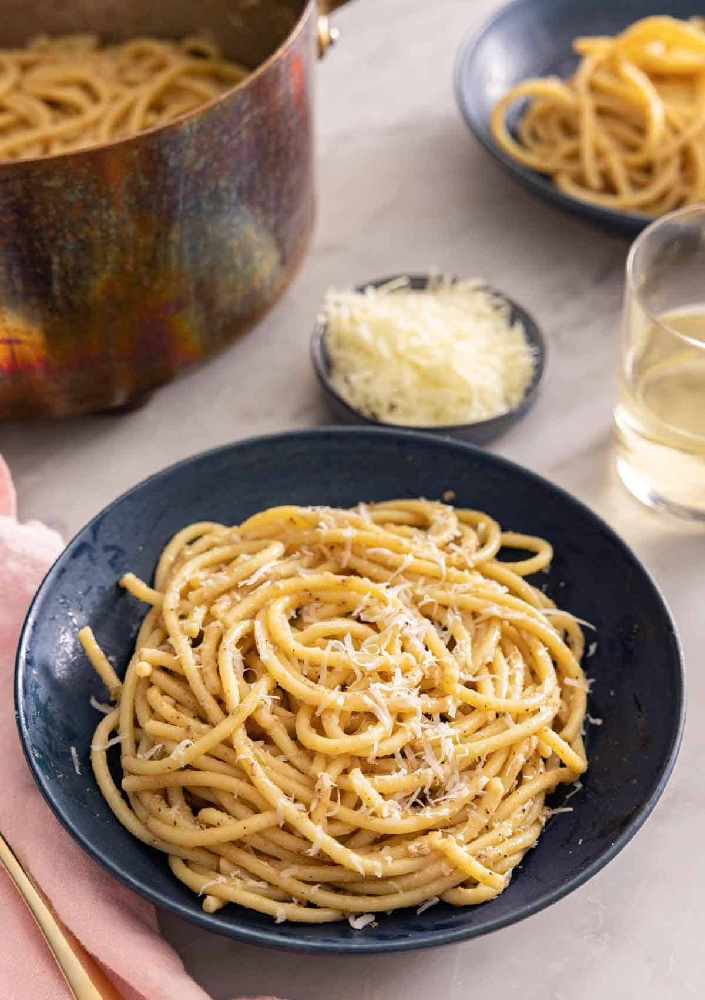

Cacio E Pepe

Description
If you want a simple pasta recipe with minimal ingredients, this cacio e pepe is perfect for you!
This dish is a classic Roman pasta that literally translates to “cheese and pepper,” so if you’re a fan of those two things, it’s guaranteed to be an instant hit.
It’s like a grown-up, fancier version of mac and cheese!
Ingredients
- 5 teaspoons salt
- 12 ounces bucatini or spaghetti pasta (340g)
- 6 tablespoons butter (85g)
- 1 tablespoon freshly ground black pepper
- 1 cup freshly grated Pecorino-Romano cheese plus more for serving (125g)
Steps
- Fill a large pot or Dutch oven with 4 quarts of water. Bring to a boil over medium-high heat. Stir in the salt. Add the pasta. Cook until almost tender (Taste a piece of pasta - the texture should be slightly firm and feel like it needs to cook for a minute or two longer). Reserve 2 cups of the pasta water and drain the pasta.
- Return the pot to medium heat. Add the butter and swirl the pot until melted. (For extra flavor, cook until browned and nutty smelling.) Stir in the pepper. Cook for 30 seconds, stirring constantly. Turn the heat down to low.
- Carefully add 1½ cups of the pasta water and bring to a simmer. Add the drained pasta and toss with tongs to coat with butter. Sprinkle in half of the cheese. Toss until well combined and the cheese melts into the sauce. Remove from the heat. Repeat with the rest of the cheese. If the pasta becomes dry, add more reserved pasta water. Serve immediately topped with additional cheese and pepper, if desired.